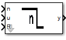

Inputs:
R: logic
n: numeric
u: logic
Outputs:
y: logic
States:
x: numeric
temp: numeric
Init-Code:
x = 0;
Run-Code:
if (R) {
x = round(n);
}
temp = x;
if(u) {
x = round(n);
}
else {
if(temp > 0) {
x = x - 1;
}
}
y = ((temp > 0) || u);